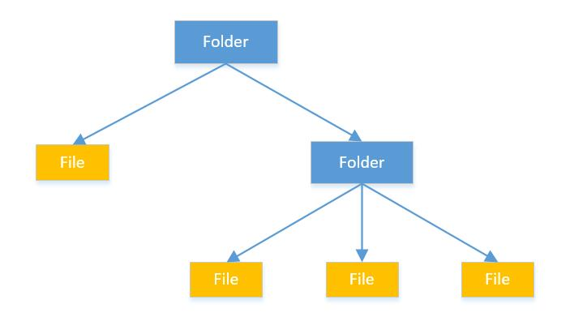
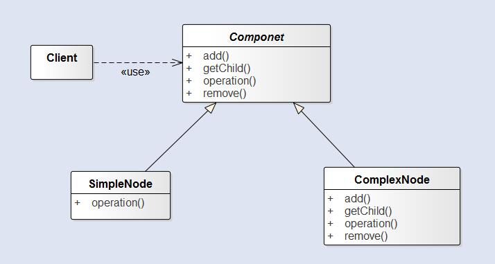

组合模式
文章目录
组合模式允许你 将对象组合成树形结构来表现“整体/部分”层次结构。组合能让客户以一致的方式处理个别对象以及对象组合。它使我们树型结构的问题中，模糊了简单元素和复杂元素的概念，客户程序可以向处理简单元素一样来处理复杂元素，从而使得客户程序与复杂元素的内部结构解耦。
这里的简单元素和复杂元素又是指什么呢？我们这里用文件和文件夹来作为示例说明，简单元素就相当于文件，这一个元素只包含这一个文件项。复杂元素就相当于文件夹，这一个元素可能包含多个文件项，形成一种复杂的树形结构。我们就可以使用组合模式来统一处理简单元素和复杂元素，把相同的操作应用在简单和复杂元素上。换句话说，在大多数情况下，我们可以忽略他们之间的差别。

结构
要实现对简单元素和复杂元素统一的处理，组合模式提供给我们的方法就是采用统一的接口，消除简单元素和复杂元素的差异。

Componet为简单元素和复杂元素的共同接口，它为add(),remove(),getChild()提供默认的实现。SimpleNode通过实现Componet中支持的操作，定义了自己的行为。ComplexNode由于是复杂元素所以实现了add(),remove(),getChild()操作。
组合模式通过统一的接口，让客户将不同的元素一视同仁。也就是说，一个元素究竟是简单元素还是复杂元素对客户是透明的。当然这样的设计违反了单一职责，但是这样设计的优势也很明显，所以这是一种设计上的折中。
Java中的File类也使用了组合模式，将文件和文件夹统一到File类中
使用场景
- 想表示对象的“整体/部分”层次结构
- 希望用户忽略组合对象与单个对象的不同，用户将统一地使用组合结构中的所有对象。